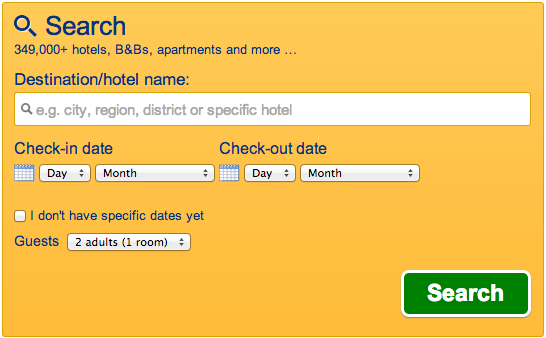
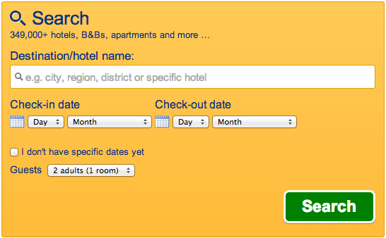

Introduction to A/B testing
Who's this dude?
Alejandro Pardo Lopez
- Client Side Developer @ Booking.com
- @apardolopez
What is A/B testing?
Assign randomly your users into two or more groups, each one exposed to a different variant of the website
Common A/B test
- 2 variant test (Base and Variant)
- Userbase split in 50% - 50%
Examples
What do we want to measure
Usual suspects
- CTR (Click Through Rate)
- Conversion: Successful sign up / purchase / click on CTA per visitor)
- Others:
- Clicks
- Pageviews
Other useful metrics
- Performance (page load times, navigation times)
- Backend performance (CPU usage, wallclock)
- Errors
- External impact (e.g. # of customer Care tickets)
Wait, there's more!
More than 2 variants
- > 2 variants (famous Google's 40 shades of blue)
- Experimental features to reduced group of users for early feedback
- Potentially dangerous code
Graceful degradation - Emergency switches
- Disable lightactions
- Reduce data shown to reduce queries to overloaded DB
- Hide buttons that lead to pages in trouble (e.g. in another datacenter that is under pressure)
A/A experiments
Interpreting results of A/B tests
Conclusive vs inconclusive results
Conclusive results
We are confident that one of the variants is statistically significant
Whut???!!!!
In other words...
We can confidently say which one is the winner (or loser)
Inconclusive results (aka neutral)
If there was an effect it was too small to be measured
Secondary metrics FTW!!!
- Secondary signups
- Errors
- Test is a refactor
Trustworthy data
"When running online experiments, getting numbers is easy; getting numbers you can trust is hard"
Trustworthy data
Without data you can trust, you cannot make a decision.
Basically, you know nothing about the results of your test
Robots
They can bias your results
- Visitor numbers will be inflated
- Visitor numbers can be altered in just one variant, making distributions uneven
- Conversion rates can me affected as well due to the increment in visitors
- But also clicks! Some robots parse Javascript
Interfering experiments
Modifications on same features running at the same time can bias results
Interfering experiments
E.g. button color change and position change
 

Tracking
Aka putting users in your experiment
Wrong Tracking === Useless data
...and wasted time...
...and unmeasured impact on the site...
...and a hard time for the poor dev...
Tracking challenges
Assign users to variants randomly
Distribution of visitors should match the expected split
Avoid noise
Track only people that are actually exposed to the change
Otherwise, spotting change in results is much harder, and exp has to run for longer
Avoid noise
e.g. Track everyone visiting the website, but the change is only on the product page
Track all variants
Tracking based on JavaScript
Very powerful
More precise tracking (e.g. tracing based on user interactions)
But weaker too
- Sensitive to JS errors
- Cookie overrides by HTTP requests
Some examples of A/B testing solutions
Google Content Experiments (aka Website Optimizer)
Integration with Google analytics
Both server and client side solutions
Source: https://support.google.com/analytics/answer/1745147?hl=en-GBOptimizely
One of the most popular frameworks
Unfortunately based on Javascript only
Source: https://support.google.com/analytics/answer/1745147?hl=en-GBVanity
Both server and client side solutions
Source: http://vanity.labnotes.org/Mailchimp
Easily test email campaigns
Source: http://mailchimp.com/features/ab-testing/Ok dude, shut up and let's do some coding
Basic starting framework
GITHUB LINK!
Challenge #1
- Track users when they click on a simple link
- Only the copy of the link changes
Challenge #2
- We are showing a button only to logged in users
- window.LXJSWorkshop.user.isLoggedIn will be true if user is logged in
Challenge #3
- For users browsing the site in Portugal (window.LXJSWorkshop.user.country === 'PT')
- We will have a stats JSON structure (window.LXJSWorkshop.stats)
- We will display a table like section showing this data
{
'beerConsumedInLitres' : 15,
'talksSeen' : 4,
'hangoverIndex' : 7.8
}
Challenge #4
Extend basic framework with the ability to track when an element is visible
Challenge #5
Extend basic framework with localStorage
- User navigates away, request might not be fulfilled (server down, browser not downloading img)
- Keep data until we know it has been processed by backend
- When do we have to store or retrieve the locally stored data?